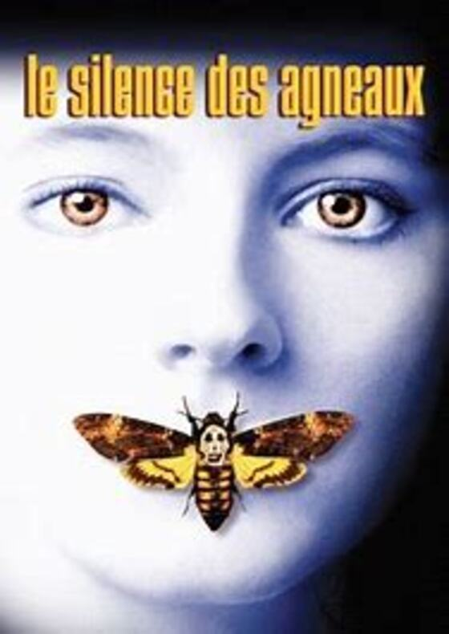

|

|
Présentaion du Silence des agneaux:Nom du film: Le silence des agneaux Réalisateur: Jonathan Demme Scénario: Ted Tally, Thomas Harris Acteurs principaux: Anthony Hopkins, Jodie Foster, Scott Glenn Genre du film: Thriller, Drame Synopsis:Un psychopathe connu sous le nom de Buffalo Bill sème la terreur dans le Middle West en kidnappant et en assassinant de jeunes femmes. Clarice Starling, une jeune agent du FBI, est chargée d'interroger l'ex-psychiatre Hannibal Lecter. Psychopathe redoutablement intelligent et porté sur le cannibalisme, Lecter est capable de lui fournir des informations concernant Buffalo Bill ainsi que son portrait psychologique. Mais il n'accepte de l'aider qu'en échange d'informations sur la vie privée de la jeune femme. Entre eux s'établit un lien de fascination et de répulsion. |